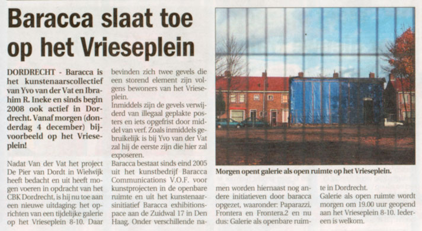
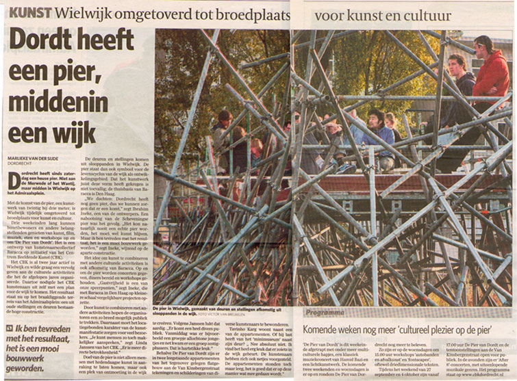

Publication
Stedelijke interventie met kunststrandje
Dordt Nu 11-08-2011
Kunstcommando trekt met bewoners de wijken in
De Stem van Dordt 10-08-2011
KunstCommando: Kunst Redt!
Dordt Nu 01-06-2011
Redt het CBK Dordrecht!(gevolg bezuinigingen)
De Stem van Dordt 02-02-2011
Baracca: Kunstenaars verliezen plek (gevolg bezuinigingen)
AD 24-01-2011
Kunstenaars Initiatief Vrieseweg 22 (KIV22)
AD 16-07-2010
Kunstvlaai Amsterdam 2010
Kunstvlaai website 21-05-2010
De avond van Yvo van der Vat
De Stem van het Weekend 14-10-2009
Galerie als openbare ruimte
AD 05-12-2008

Dordt Nu 03-12-2008
AD 02-12-2008
De Pier van Dordt
De Stem van Dordt 26-11-2008
De Stem van Dordt 26-09-2008
Dordt Centraal 24-09-2008

AD 22-09-2008
De Stem van het Weekend 19-09-2008
AD 09-2008
AD 18-09-2008
AD 13-09-2008
Frontera

Holland Spoor 05-2007
Paparazzi
Bbk krant nr.280 05-2007
Baracca
Haags Nieuwsblad 24-11-2006
Hoogtij: voorheen de Haagse Rondgang
Uit Agenda 03-09-2006
Hotel Transvaal
AD 14-06-2006
Solo expo Galerie de Fietsenstalling
Haagsche Courant 25-06-2003
Eindexamen KABK
Mare Leids weekblad 20-06-2002
Opdracht KABK
Haagsche Courant 21-06-2000